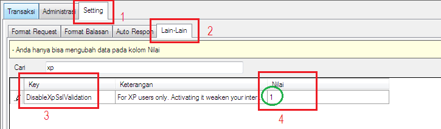

F.A.Q | Tentang OtomaX
Tanya:
Mengapa YM tidak login di Windows XP?
Jawab:
Pada versi 3.5.1 terdapat fitur baru bernama Force valid SSL Certificate (lihat disini), ini berguna untuk mengamankan akses internet banking. Akan tetapi, menimbulkan ekses khusus pengguna Windows XP yang menggunakan OtomaX versi 3.5.1 atau lebih tinggi, dimana YM pada OtomaX tidak dapat login.
Kemudian, pada versi 3.5.4 direlease solusi ekses di atas (lihat disini), yakni fitur Setting DisableXpSslValidation, ini berguna untuk menon-aktifkan fitur Force valid SSL Certificate. Dengan menon-aktifkannya YM pengguna Windows XP dapat login kembali di OtomaX. Berikut langkahnya:
- Masuk menu Setting -> Lain-lain.
-
Cari Key: DisableXpSslValidation, kemudian pada kolom Nilai isi 1 dan klik tombol Simpan.

- Tutup OtomaX dan jalankan kembali.
- Selesai, YM dapat login kembali.
Catatan: untuk meningkatkan keamanan internet banking khusus bagi pengguna Windows XP disarankan beralih menggunakan Windows 7 atau lebih tinggi dan mengaktifkan fitur Force valid SSL Certificate dengan memberikan nilai 0 pada menu DisableXpSslValidation.